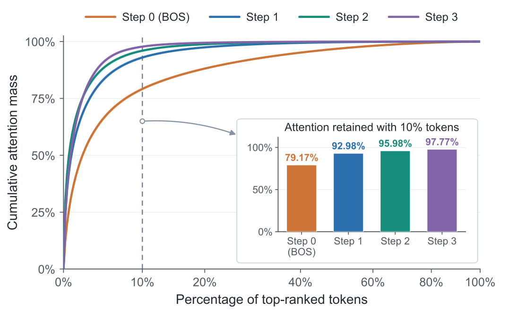
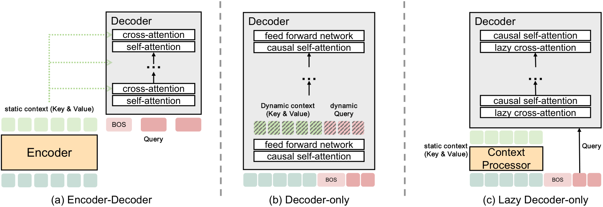

Contents · 7 sections
1Why long history does not fit in the decoder2How RecMem compresses old history into 16 slots3Walkthrough: a user at interaction 20004Why sequential and packed updates should agree on the prediction5How much quality 216 tokens can keep6What this means for people building generative recommenders7LimitationsSHARE
After 10,000 clicks, do you still unroll every previous one? RecMem packs old history into 16 slots
You are building a generative recommender. Each time a user clicks, the model treats their history as a sequence and directly generates the next item they might want. The longer the history, the easier it is to see preferences that only reappear after a long gap. If the full history is fed into a Transformer's attention window, compute and memory grow with length. For a user on a C2C marketplace who has already clicked thousands of times, even tens of thousands, do you unroll every previous click for the next prediction? Keeping only the most recent 200 interactions is much cheaper. But if they bought a brand 800 clicks ago and it never shows up in the last 200, that clue is gone.
This paper, from Shanghai Jiao Tong University and Alibaba's Taobao & Tmall Group, proposes RecMem: a fixed-size recurrent memory for generative recommendation. Among existing approaches, HSTU is a Transformer generative-recommendation backbone from 2024. It can run full attention over the most recent 1,200 interactions, or grow with the entire prefix, but the number of tokens the decoder sees grows with history. PersonalizedHSTU (PHSTU) folds history into user tokens and KV states by segment; the stored state grows as more segment summaries are kept. Retrieval methods pick some older interactions back into the recent window, so they still see only a subset of history. RecMem cuts the archived history into segments of 200, and writes them one segment at a time into a fixed set of 16 memory slots with a slot-wise forget gate. The decoder always sees those 16 slots plus the most recent 200 items, 216 tokens in total. On MerRec, a Mercari marketplace benchmark, RecMem-Stream keeps 87.9% of HSTU-1200's Recall@10 and 97.0% of its Recall@200. It outperforms PHSTU, a recent-200-only control, and a retrieval baseline that also uses 216 tokens. The same trained checkpoint, evaluated on 6,442 users through 10,000 interactions, shows no collapse in interval quality.
These numbers are from ID-based recommendation on MerRec with HSTU-family backbones.
Why long history does not fit in the decoder
The goal is to use old history without letting decoder context grow with it. The paper writes this as three requirements. The retained memory should occupy constant space, and the decoder window should not grow with the number of segments already processed. After compression, prediction on future interactions should still approach what full-history access can do. Each recurrent compression step introduces approximation error, and that error must not accumulate without bound as updates continue.
Keeping only a recent window, or retrieving a few items from older history, both select a subset of the available history. If discarded interactions contain clues that matter for the future, prediction suffers. PHSTU's segment summaries can bring in longer history, but the more summaries are kept, the more user-side tokens and KV states are stored, so the space is no longer constant. Another method, Rec2PM, learns compression from reference states produced by a teacher model. RecMem's aim is to train this fixed-capacity bottleneck with recommendation supervision, without a teacher.
How RecMem compresses old history into 16 slots
RecMem splits a user's history into two parts. The most recent 200 items are left as-is for the decoder, and are called the recent suffix. Everything earlier is the archived prefix, cut into K segments of at most 200 items, then sent left to right into the update module U. The memory state M is a fixed table: 16 rows (16 slots), each of dimension 256, starting at all zeros. Each new segment S_t produces one update M_t = U(M_{t-1}, S_t). After that, archived history can enter prediction only through the final state M_K.
RecMem is a bifurcated encoder-decoder built on HSTU. The update module U follows the encoding path, writes a candidate memory, and applies the gated update; the next item is predicted on the decoding path. Eight lower blocks are shared and capture general sequential dependencies. The upper blocks, eight on each side, are separate: one side writes a segment into memory, the other predicts from the memory and the recent window. The paper calls this default setup SplitTop-8/8/8: 24 unique backbone blocks, with an active depth of 16 layers on each of the encoding and decoding paths.
In an update, items in the current segment first become embeddings E(S_t). They are concatenated with a learned bank of 16 query vectors Q and the previous memory M_{t-1}, then sent through the shared lower layers and the encoder-specific upper layers. The representations read out at the query positions are this step's candidate memory. At the same time, a mask-aware mean of the segment's item embeddings produces 16 forget gates in (0, 1), one scalar per slot, then broadcast across that slot's dimensions. In the new state, each slot keeps as much of its old content as the gate specifies, and the rest is replaced by the candidate memory. If a segment is all padding, the update is skipped and the memory stays unchanged. To keep values from exploding over a long recurrence, each slot is projected into a Euclidean ball of radius 10: if the norm is at most 10, the slot is left unchanged; if it exceeds 10, it is scaled back to 10. In the default setup, the output projection of each encoder-specific upper block is spectrally normalized. Position encodings are local to each segment, so there is no need for a global position index that grows with history.
At decode time, the 16 slots and the embeddings of the most recent 200 items are concatenated into 216 tokens and sent through the same shared lower layers and the decoder-specific upper layers. Each position in the recent window can attend to all memory slots, and attends causally, left to right, inside the window. The hidden vector at the last position is scored against candidate item embeddings by a dot product. Under this split, at any prediction time the input is the most recent 200 items plus the entire remaining prefix. The prefix is aligned from the side next to those 200 items and then segmented, so there is no gap between the two parts. If no cache is available, the current prefix is compressed into memory segment by segment. If the memory is already cached, a newly completed segment is absorbed with a single update, so the per-step compression cost does not grow with total history length.

Walkthrough: a user at interaction 2000
The walk-through uses the paper's default setup, for a user whose prediction position is the 2,000th interaction. The extended protocol evaluates through the 3,000th interaction, and the long-history evaluation also passes this position. The gate values are illustrative; the segment length, window, and slot count come from the paper.
Step 1, split the history. To predict the 2,001st item, the recent suffix is items 1,801 through 2,000, 200 in total. The archived prefix is items 1 through 1,800, which divides evenly into 9 segments of 200. However much longer the history later grows, the decoder side remains 16 slots plus 200 items, 216 tokens.
Step 2, write the first segment from an all-zero memory. The candidate memory is computed from the first segment and the 16 query vectors. In the update formula the previous state is 0, so what is written in the first step equals one minus the gate, times the candidate. Even if a slot's gate is 0.8, only 20% of the candidate is written in. Then any slot whose norm exceeds 10 is scaled to 10; the others are left unchanged, and the state is passed to the next segment.
Step 3, only in a later segment does the gate actually choose between keeping the old and writing the new. Illustrative numbers: when the 5th segment arrives, slot 3 has gate 0.8, so it keeps 80% of its old content and replaces 20% with this segment's candidate; slot 7 has gate 0.2, so most of it is overwritten. Each slot's gate is computed from this segment's mean embedding, so different slots can keep different fractions of the old state. After all 9 segments, the result is M_9.
Step 4, decode. Concatenate M_9 with the most recent 200 items. Each position in the recent window first sees the 16 slots, then earlier items in the window in causal order. The hidden vector at the last position scores the candidates. None of the 1,800 archived items appears here as a raw item; they live only in those 16 slots.
Step 5, do these 16 slots actually help? On a model with dimension reduced to 64, the paper zeros all 16 slots at inference and keeps only the recent window: at history length 2,000, Recall@10 drops from 41.35 to 20.23. This shows that the trained model does use the slots at inference: after they are zeroed, the recent window alone is not enough.
There is also a separately trained control, HSTU-Recent-200, that sees only the most recent 200 interactions. Against this control, RecMem-Stream is 1.433 percentage points higher in Recall@10 and 4.454 points higher in Recall@200 under the standard protocol. The paper then stratifies anchors where the target item occurred only in the archive, not in the recent 200, by how recently that last occurrence was. On the oldest 20% of those anchors, Stream is still 1.188 points higher than the control. These differences show that exact-item history in the archive, including the oldest stratum, contributes to prediction.
What happens with a different write rule? Attention writing, temperature-scaled attention writing, and a Neural Turing Machine-style erase-write all drive the cosine similarity among the 16 slots close to 1, which means the slots collapse into a single vector. Only the gated residual update keeps slot-to-slot cosine at 0.891, and it is also 0.54 to 0.65 points higher in Recall@10. This shows that a multi-slot memory first has to preserve differences among slots, or the 16 slots degenerate into one vector. For the slot count itself, the paper swept M = 8, 16, and 32 with both the segment length and the window set to 50. Sixteen slots were best on all four metrics, with Recall@10 1.86 points higher than 8 slots. That sweep uses a different segment length from the main experiments, so its absolute scores should not be compared with the main table. Among the settings tested, more slots do not mean a higher score.
Why sequential and packed updates should agree on the prediction
Memory is updated one segment at a time. Training also considers another procedure: concatenate two adjacent segments and update once. If the update operator were fully associative, the two procedures would write the same memory. In practice, the segment-by-segment approximation introduces error.
The paper adds a stream-consistency loss. Starting from the state after the third-to-last segment, the sequential branch updates on the last two segments one by one, and the packed branch concatenates those two segments and updates once. When packing, position indices restart from 0 to 199 inside each segment, and a causal mask lets the second segment see the first. Both branches are decoded with the same recent window. A KL divergence then pulls the sequential branch's recommendation distribution toward the packed branch, and the packed branch does not pass gradients back. Using only the last two segments keeps this gradient close to the prediction step, and keeps the packed encoder input from getting too long. The full objective is the main recommendation loss — noise-contrastive estimation on the recent window, with positives shifted one step forward and negatives sampled from the item pool — plus 0.05 times this KL term.
This loss aligns recommendation distributions. Two different memories can still decode to very similar distributions. Training also uses only this last-two-segment local proxy. Under two assumptions, the paper gives a bound on the state discrepancy that does not grow with the number of segments: the update's sensitivity to the previous memory has an upper bound strictly less than 1, and the state discrepancy caused by regrouping segments is also bounded. Starting from zeros, after K segments the difference between the sequential state and the one-shot packed state is at most the semigroup gap divided by one minus the contraction coefficient. Whether those assumptions hold for a trained model is a separate diagnostic question. Hoot says
Illustrative: reuse the body's user at interaction 2000, with a 9-segment archived prefix of 200 items each. The body walk-through covers how those 9 segments are written into 16 slots and then decoded. Here we only look at the last two segments: starting from the same memory after segment 7, sequential and packed updates write two memories, and close predictions do not mean those memories are close. ρ=0.6 and ε=0.1 are only for working the bound by hand.
Same M_7 → two sequential updates or one packed update → p_seq and p_pack on the same recent window → KL flows only through the sequential branch → close predictions are not close states; the bound needs assumptions
- memory after segment 7 → two update pathsThe first 7 of the 9 segments have already been written into the same memory, and both paths start there. The sequential branch updates on segments 8 and 9 one at a time; the packed branch concatenates those two segments into one update, with position indices running from 0 to 199 inside each segment and a causal mask so the second segment can see the first.7 × 200 = 1,400; both paths start after item 1,400
- two memories and the same recent window → p_seq and p_packBoth sides use the same recent window, items 1,801 through 2,000, plus the memory each path just wrote, and decode over the same candidates to get two recommendation distributions, p_seq and p_pack. The decoder context is still 16 slots plus 200 items.16 + 200 = 216 tokens
- p_pack → p_seq (KL, packed branch stop-gradient)The stream-consistency loss uses a KL divergence to pull the sequential branch's distribution toward the packed branch, and the packed branch does not pass gradients back, so what is trained is how sequential updates produce a prediction close to the packed path. The full objective adds 0.05 times this KL term.L = L_main + 0.05 × L_stream
- close predictions ↛ close memory statesThis loss aligns recommendation distributions, and two different memories can still decode to very similar distributions, so pulling p_seq toward p_pack is not the same as pulling the two memories together. A direct constraint on memory distance would be a different supervision signal, and that is not what the paper trains with.
- contraction and the semigroup gap → a state-gap bound that does not grow with the number of segmentsThe bound on state discrepancy needs two further assumptions: the update's sensitivity to the previous memory has an upper bound ρ strictly less than 1, and the discrepancy from regrouping segments is bounded by some ε. Illustratively, take ρ=0.6 and ε=0.1: the cap is 0.25, independent of the number of segments, and the bound is 0.16 for the last-two-segment training proxy and already 0.247 at the body's 9 segments, close to the cap.0.1/(1−0.6)=0.25; 0.16 at K=2, 0.247 at K=9
These values of ρ and ε are only for seeing how the cap is approached as the number of segments grows; they are not evidence that a trained model satisfies the assumptions.

Source
Paper §3.4 stream-consistency loss and Theorem 1. The walk reuses the body's user at prediction position 2000 with 9 archived segments. ρ=0.6, ε=0.1, and the bounds 0.16, 0.247, and 0.25 are illustrative.How much quality 216 tokens can keep
The standard protocol makes a next-item prediction at each of a user's interactions 1,200 through 1,999; training uses only the first 1,200. In the table, RecMem-Main is trained with the main recommendation loss only; RecMem-Stream uses the same architecture plus the stream-consistency loss, which aligns predictions from sequential and packed updates. Recall@k is whether the correct item falls in the top k recommendations; NDCG@k also accounts for how high it is ranked. The main results are below.
| Method | Decoder tokens | Recall@10 | Recall@50 | Recall@200 |
|---|---|---|---|---|
| HSTU-1200 | 1200 | 48.18 | 63.88 | 74.44 |
| HSTU-FullPrefix | grows with t | 48.98 | 65.64 | — |
| PHSTU | 215–227 | 32.74 | 48.58 | 61.10 |
| HSTU-Recent-200 | 200 | 40.93 | 56.59 | 67.74 |
| Ret-HSTU-16 | 216 | 41.03 | 57.54 | 68.84 |
| RecMem-Main | 216 | 42.27 | 59.95 | 71.96 |
| RecMem-Stream | 216 | 42.36 | 60.12 | 72.20 |
Relative to HSTU-1200, RecMem-Stream's decoder context is 1/5.6 as large. The relative gap is smaller at larger cutoffs, which the paper reads as: the compressed memory keeps most of the predictive signal, and what is lost is more about top-rank precision. Against HSTU-FullPrefix, whose context grows with the prefix, it retains 86.5%, 91.6%, and 82.8% of Recall@10, Recall@50, and NDCG@10. The gains over PHSTU are 9.622 percentage points in Recall@10 and 11.096 points in Recall@200. The retrieval baseline Ret-HSTU-16 already beats the recent-200-only control, which shows that the archive does contain useful signal; RecMem-Stream is a further 1.332, 2.575, 0.210, and 3.357 points higher on Recall@10, Recall@50, NDCG@10, and Recall@200. Displayed table values are rounded; these differences were computed from the unrounded scores.
Could this just be extra parameters? SharedStack-16 uses one shared 16-layer backbone for both updating and decoding, with 327.283M parameters, close to PHSTU's 327.217M, and still reaches 41.568 Recall@10 and 70.556 Recall@200. Shrinking the split to SplitTop-6/5/5 (16 unique blocks) gives 42.055 Recall@10. This shows that the advantage over PHSTU remains when parameter counts are close. The default SplitTop-8/8/8 is slightly higher still, at 42.362 and 72.196.
Stream consistency raises all four metrics on both seeds 42 and 123, by 0.089 and 0.813 points in Recall@10. During training, earlier segments still go through the current update module into memory, but without gradient, and the state is detached from the graph; the number of gradient-carrying rollout segments then increases from 1 to 5, with the total number of segments held fixed. In the ablation setting, this raises Recall@50 by 1.83 points. Both results show that how training aligns the two update orders, and how long the rollout is, affects the final scores.
Under the extended protocol, which goes through interaction 3,000, RecMem-Stream reaches 41.58 Recall@10 and 70.96 Recall@200, about 96% of contemporaneous HSTU-1200. This shows that when the evaluation window is stretched to 2.5 times the training length, a fixed 216-token context still keeps most of Recall@200.
The same RecMem-Stream checkpoint is then evaluated on 6,442 users through 10,000 interactions, with no retraining and with memory still at 16 slots. Across four positional intervals, Recall@10 stays between 40.519 and 40.689, and Recall@200 between 69.867 and 70.379. Two separately run evaluations, through 5,000 and 10,000 interactions, match exactly on all 3,800 overlapping positions. This shows that, on this cohort and over this observation window, interval quality for the same checkpoint does not collapse.

The paper also reports no empirical sign of capacity saturation, long-term forgetting, or accumulated-update instability on this cohort and window. These numbers measure recommendation metrics; they do not show whether the state-space bound holds.
The compute benchmark uses randomly initialized architectures and synthetic item IDs, measured on a single GPU in bfloat16, and excludes data loading, networking, remote state storage, and scheduling. At batch size 64 and history length 2,000, RecMem's warm prediction latency is 7.653 ms, and it retains 8 KiB of state per user; PHSTU is 9.245 ms and 432 KiB; HSTU-1200 is 106.613 ms and keeps no recurrent state. This shows that, in this model-compute benchmark, 16 fixed slots compress per-user state to 8 KiB and also shorten warm prediction. The measurement stops at model computation and does not include end-to-end online serving.
What this means for people building generative recommenders
If decoder context is already blocked by history length, compressing the archived history into a fixed-size memory and training that bottleneck directly with a recommendation loss is a path whose trade-off has already been measured on MerRec.
Two measurements are worth doing first. One is how much is lost by using only a recent window: pull out cases where the target item occurred only in earlier history, and see how much the current model trails a recent-window control. The other is whether the per-user state cached in production grows with history. If the system already uses a method like PHSTU that keeps per-segment summaries, that state grows with the number of retained summaries; switching to a fixed-slot recurrent update like RecMem keeps the memory state size independent of history length. On the write rule, first check whether multiple slots have already collapsed into one vector. In training, lengthening the rollout from short to long, and pulling predictions from sequential and packed updates toward each other, are both configurations with a positive contribution in the paper, and can be ablated on your own backbone.
Limitations
The evaluation is ID-based recommendation on MerRec only, and the backbones are all in the HSTU family. The fixed state size and decoder context follow from the architecture; how much predictive signal is retained is measured only on the history lengths the paper evaluates. The bound on state discrepancy depends on the contraction and approximate semigroup consistency assumptions. The 10,000-interaction experiment uses a single Stream checkpoint and one fixed cohort; the paired Main/Stream comparison covers only two seeds. The systems numbers measure model computation, not production serving overhead. The authors' Rec2PM-O reproduction did not yield a reliable quantitative comparison, so the paper does not claim empirical superiority over it.
How did this read for you?
Hoot made a note. Thanks for the feedback.
One tap, no sign-in; tap again to undo. Only anonymous counts are kept, never who you are.
Related papersMore from Paper Daily

Generative · 2026-11-02PFA: Attention Can Be Progressively Focused in Long-Sequence Generative RecommendationThe authors at Alibaba found that when a generative recommender decodes with beam search, attention concentrates on a few past behaviors as decoding proceeds, and which behaviors matter stays largely the same from step to step. Building on this, PFA picks the important history once for the whole decode, instead of having every beam pick it again at every step. It attends to the full history as us… Generative · 2026-11-16ReSID: Rethinking Long-Tail Retrieval in Generative Recommendation through Item ReachabilityGenerative recommendation encodes each item as a string of Semantic ID tokens and generates them one position at a time with beam search, and cold long-tail items are hard to retrieve this way. The authors take apart the whole chain from encoding through decoding to matching and find that tail items are mostly lost early in decoding: on Amazon Industrial, 62.5% of tail targets have already fallen…
Generative · 2026-11-16ReSID: Rethinking Long-Tail Retrieval in Generative Recommendation through Item ReachabilityGenerative recommendation encodes each item as a string of Semantic ID tokens and generates them one position at a time with beam search, and cold long-tail items are hard to retrieve this way. The authors take apart the whole chain from encoding through decoding to matching and find that tail items are mostly lost early in decoding: on Amazon Industrial, 62.5% of tail targets have already fallen… Generative · 2026-11-09RecGroupMemory: Feedback-Aware Cohort Memory for E-Commerce RecommendationWhen a large model plans a recommendation workflow, it can be given memory of how a group of users has behaved. The difficulty is that new transaction feedback arrives the next day and the advice should change, while the record of the group definition, the observation window and the statistics must not be rewritten along the way. RecGroupMemory splits the memory in two layers. One is a read-only…
Generative · 2026-11-09RecGroupMemory: Feedback-Aware Cohort Memory for E-Commerce RecommendationWhen a large model plans a recommendation workflow, it can be given memory of how a group of users has behaved. The difficulty is that new transaction feedback arrives the next day and the advice should change, while the record of the group definition, the observation window and the statistics must not be rewritten along the way. RecGroupMemory splits the memory in two layers. One is a read-only… Generative · 2026-11-10Rethinking Latent Reasoning for Generative Recommendation: Beyond Teacher-Generated CoT and Recurrent Hidden-State FeedbackLatent reasoning for generative recommendation usually needs a teacher model to write chain-of-thought traces, which is costly and hard to stabilize. This paper skips teacher generation. It builds semantic targets from the text meaning of items already in a user's history, and uses those targets to supervise the model's intermediate tokens that are reserved for reasoning steps, without looking at…
Generative · 2026-11-10Rethinking Latent Reasoning for Generative Recommendation: Beyond Teacher-Generated CoT and Recurrent Hidden-State FeedbackLatent reasoning for generative recommendation usually needs a teacher model to write chain-of-thought traces, which is costly and hard to stabilize. This paper skips teacher generation. It builds semantic targets from the text meaning of items already in a user's history, and uses those targets to supervise the model's intermediate tokens that are reserved for reasoning steps, without looking at…
Generative · 2026-10-28LoopGR: Parameter-Efficient Scaling for Generative Recommendation via Recurrent DepthMaking a generative recommender stronger usually means adding layers, which means adding parameters and memory. Tencent's LoopGR (a generative recommendation backbone that reuses one decoder in a loop) runs the same decoder several times. Between passes, the decoder's BOS hidden state (its current judgement of the target) is added to every history position and a tiny GRU rewrites the history alon… Generative · 2026-10-24Coarse-to-Fine Long-term Interest Modeling for Generative RecommendationGenerative recommendation generates the next item's semantic IDs one code at a time, and attention cost grows quadratically with sequence length, so these models usually take only the most recent few dozen behaviors and leave the long-term history unused. GLASS uses the long-term history differently for each semantic ID level. Before generating the first-level code, it averages the item vectors o…
Generative · 2026-10-24Coarse-to-Fine Long-term Interest Modeling for Generative RecommendationGenerative recommendation generates the next item's semantic IDs one code at a time, and attention cost grows quadratically with sequence length, so these models usually take only the most recent few dozen behaviors and leave the long-term history unused. GLASS uses the long-term history differently for each semantic ID level. Before generating the first-level code, it averages the item vectors o… Retrieval · 2026-11-27OneQuery: Unified Sequence-to-Structure Generation for Multilingual E-commerce Query UnderstandingIn cross-border e-commerce search, query understanding is often split into language identification, spelling correction, translation, and tagging. Errors in an earlier stage are passed on, the stages are optimized separately, and the pipeline is expensive to maintain. Once a translation is wrong, later tagging often cannot recover. OneQuery folds those four jobs into one schema-constrained genera…
Retrieval · 2026-11-27OneQuery: Unified Sequence-to-Structure Generation for Multilingual E-commerce Query UnderstandingIn cross-border e-commerce search, query understanding is often split into language identification, spelling correction, translation, and tagging. Errors in an earlier stage are passed on, the stages are optimized separately, and the pipeline is expensive to maintain. Once a translation is wrong, later tagging often cannot recover. OneQuery folds those four jobs into one schema-constrained genera… Generative · 2026-11-16TriGen: A Generative Paradigm for Trigger-Induced RecommendationE-commerce has a common kind of recommendation: a user clicks an item in the main feed and lands at once in a feed built around that item. The recommendations must follow the intent of that click without throwing away the user's long-term taste. Generative recommendation by default just continues the user's history with more SIDs, so one click is easily diluted in a long history, while traditiona…
Generative · 2026-11-16TriGen: A Generative Paradigm for Trigger-Induced RecommendationE-commerce has a common kind of recommendation: a user clicks an item in the main feed and lands at once in a feed built around that item. The recommendations must follow the intent of that click without throwing away the user's long-term taste. Generative recommendation by default just continues the user's history with more SIDs, so one click is easily diluted in a long history, while traditiona…
Discussion
Add experiment details, reproduction notes or a different take. Requires a GitHub sign-in.
Loading the discussion…